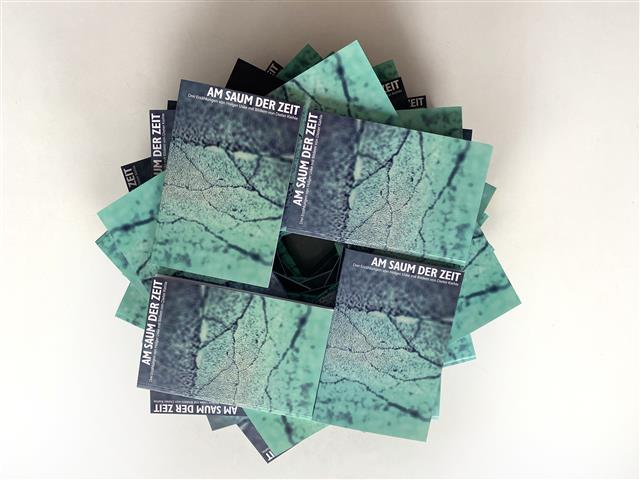

In der nicht enden wollenden Pandemie 2021 entschloss sich Holger Uske, drei neue Erzählungen in einem Band zu versammeln. Neben der längeren Erzählung „Cocktail" sind das „Wege" und die titelgebende Erzählung „Am Saum der Zeit". Nach der bereits im Projekt „Lichtspiel – Wortspiel" bewährten Zusammenarbeit mit dem Maler und Grafiker Dieter Kiehle führte die im April 2021 noch immer unersprießliche Geschäftslage der Verlage dazu, eine Mini-Auflage in der Edition Sinnbild, wiederum gestaltet von Andreas Kuhrt, herauszubringen.
Hier ist das Ergebnis – erhältlich in den beiden Suhler Buchhandlungen Buchhaus Suhl und Buchhandlung am Topfmarkt sowie beim Autor. Eine Buchpremiere wird angestrebt – wann immer es wieder möglich sein wird. Ansonsten ist der Leser / die Leserin eingeladen, sich in die Welt der wechselnden Ich-Erzähler und -Erzählerinnen hineinzuversetzen und ihren Wegen am Saum der Zeit entlang zu folgen. Viel Spaß dabei!

Buchturm mit schwarzem Quadrat in der Mitte. Foto: Manuela Hahnebach
COCKTAIL (Auszüge)
Nachmittags in der Stadt. Zwischen Häuserreihen fahren Straßenbahnen auf gummierten Rädern. Ein Gleiten wie von kleinen Schiffen, zuweilen klingelbewehrt, zwischen immer greller werdenden Läden entlang, Geschäftsketten mit schneller wechselnden Namen, als man sich merken könnte. Das Flirren von Anzeigetafeln. Menschen in Eile, Menschen mit Muße. Zu zweit als Pärchen, gestikulierend, vertraut. Soloschlenderer. Fahrraddrängier. Rolleryuppies seit geraumer Zeit. Und ich mitten unter ihnen. Unterwegs zu jener Ausstellung, die man unbedingt gesehen haben sollte. Das hab ich mir mit Martin vorgenommen. Mit ihm unterwegs zu sein gibt dem Tag etwas Besonderes. Momente für uns, oft aus dem Dienstkorsett geschnitten. Da vorn seh' ich ihn schon. Hallo, Martin!
Britta, schön, dich zu sehn! Auch auf dem Weg zur Galerie? Satzfetzen zur Begrüßung, ziemlich laut über Passanten hinweg. Dosiert in die Menge geworfen. Wer weiß, wer einen hier alles kennt. Was für ein Zufall, schön! Detailliert vereinbart. Momente für uns zu gewinnen will geplant sein. Kein Küsschen. Oder nur flüchtig. Wir sind Kollegen auf Kulturtour. Reihen uns erstmal in die Schlange ein vor der Galerie.
…
Verpass den Moment nicht. Sein Satz, mit dem er mich zuweilen unter Druck zu setzen versucht. Sanft, wie er meint. Aber es ist nicht sanft. Ich weiß, was er will. Schöne Stunden schinden. Für sich, für uns. Am liebsten mitten im Alltag aus ihm fallen. Anders sein dürfen für eine halbe Stunde, eine ganze, andere. Wie hier in der Ausstellung.
…
Verpass den Moment nicht. Ja zu sagen, nein. Räume zu öffnen oder verschlossen zu halten. Alles zu wagen. Was aber ist alles? Ich drücke seine Hand. Ich weiß, dass er darauf immer reagiert. Es ist wie ein geheimes Zeichen des Einverständnisses. Wie bei lange Vertrauten. Was ist lange? Die Momente liegen dicht an dicht. Wir sind es, die hin und her springen. Oder in ihnen wohnen bleiben. Verpass –

Eines der Bilder von Dieter Kiehle im Band.
WEGE
Sie schlugen den Weg nach links ein, und er schlenderte neben ihr her. Das war es doch: diese Leichtigkeit, zu gehen. Die er neben ihr immer verspürte. Als nähme sie einfach ein Stück Schwere fort. Dass seine Schritte leichter wurden, der Gang anders, die Gedanken heller. Er wusste gar nicht genau, wohin der Weg führte. Links zweigte einer vom Hauptweg ab, in die weniger besuchten Areale des Parks. Der ihm in der Abendsonne anders vorkam: gesättigt vom Tag, stiller nach dem Durchzug der Besucher. Kindergruppen, Rentner mit Brotkrumenbeuteln für die Enten am Teich. Und die unvermeidlichen Urlaubsgäste, die immer alles ganz besonders fanden.
Den Weg nach links. Von den späten Besuchern weg. Wer von ihnen hatte ihn gewählt, er oder sie.
Sieh mal, sagte sie.
Vielleicht war das eine Erle. Die bestimmt selten war. Von der er zu wenig wusste. Nach Buchen, Eichen, Birken war seine Laubbaumkenntnis beinahe aufgebraucht. Etwas ganz Besonderes: da kam nur sie in Frage. Er konnte sich hinter sie stellen, die Arme um sie legen und in die Richtung ihres Blickes schauen. Sein Gesicht an ihres legen.
Schön, oder?
Schön, sagte er und wollte nichts als diesen Moment behalten.

Der Autor mit seinem Buch.
Foto: Manuela Hahnebach
AM SAUM DER ZEIT (Titelanfang)
Als ich fünfzehn war, zogen wir in eine andere Gegend. Meine Eltern verkauften mir das als Aufstieg. Sie konnten beide ihrer Arbeit weiter nachgehen, eine halbe Stunde zu Fuß zum Büro, das war doch kein Problem. Ich musste die Schule wechseln. Mit fünfzehn bist du Klasse 9, da lernst du die Mädchen schon kennen, wie sie als Frau sein werden. Aber alles kribbelt noch und ist neu. Hanne im Nachbarhaus war dreizehn, wie sie mir bald verriet. Ich hatte sie zuerst für einen Jungen gehalten, mit dem ich auch im neuen Stadtteil Streiche würde aushecken können, mit ihren kurzen Haaren und so dünn, wie sie war.
Hinter den Reihenhäusern gab es hier kleine Gärten. Vorher, in den Neubauhäusern, hatten wir auf der anderen Straßenseite einfach ein Stück Land in Beschlag genommen, umzugraben begonnen und ein paar Pflanzen gesetzt. Die meisten machten das so. Das Land schien niemandem zu gehören oder allen oder der Stadt. Keiner baute einen Zaun. Jeder wusste, wem sein Stück Anbaufläche gehörte. Garten war etwas anderes, hatte ich manchmal gedacht, weil ich die Schrebergärten entlang der Bahnlinie im Sinn hatte mit ihren Außenzäunen und den winzigen Hütten. Manche der Schulfreunde schwärmten von den Feten dort, abseits aller Aufsicht, und dass einen in der Hütte niemand beobachten konnte. Erdbeeren immerhin ernteten wir. Wir, das waren Mutter und ich. Vater hatte kein Faible dafür. Wenn es ans Umgraben ging, sagte er meist: Nimm Tim mit, Tim ist schon stark, der kann mich vertreten. Möhren, Petersilie, was man so braucht, sagte Mutter. Kohlrabi und auch schon mal Kartoffeln. Aber die Erdbeeren waren das Beste. Ich kann mich nicht erinnern, dass es jemals welche zu kaufen gab. In der neuen Gegend hatte niemand eine Hütte im Garten, gleich hinterm Haus. Hier und da sah man einen Schuppen für Gartengeräte. Zum Umziehen reicht's, zwinkerte Hanne eines Tages. Aber ich greife vor.